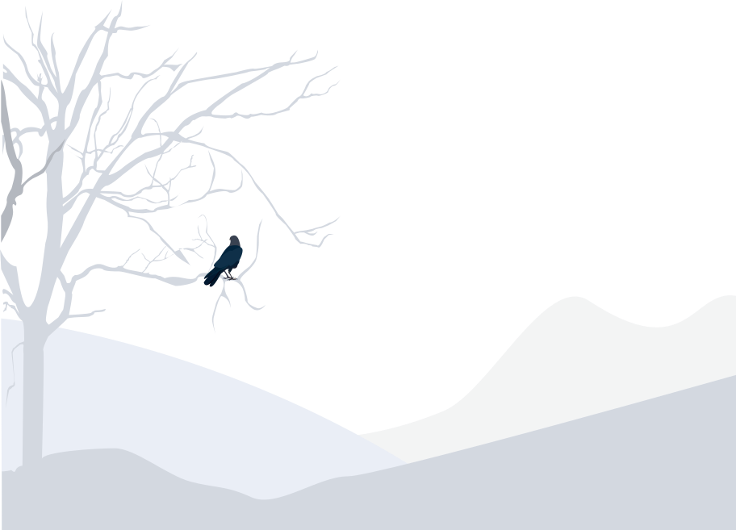
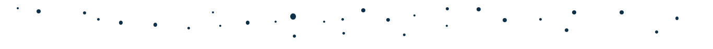
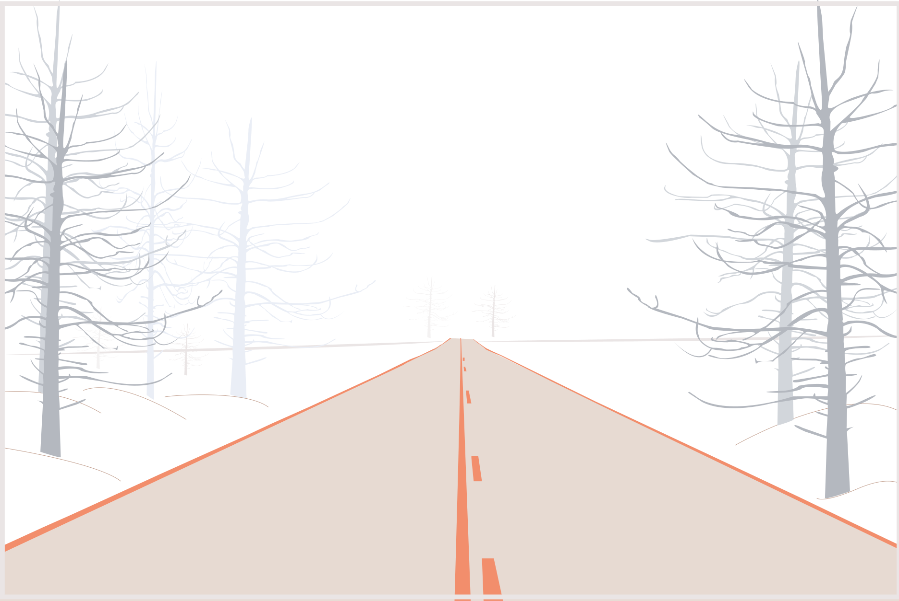

"Jeg holder af en holistisk tilgang til alle mine projekter, jeg er din digitale håndværker."
Hjerteligt velkommen til mit portfolio.
Mit navn er Katharina og jeg elsker virkelig mit arbejde som multimediedesigner.
Dén passion følger med i alt hvad jeg laver.
Min tilgang til alle opgaver er meget grundig og empatisk, for min største drøm er at hjælpe dig med at opnå dine største drømme.
Dén passion følger med i alt hvad jeg laver.
Min tilgang til alle opgaver er meget grundig og empatisk, for min største drøm er at hjælpe dig med at opnå dine største drømme.
Igennem min forståelse for design, html, css, fotografi, lyrik, og markedsføring.
Blandet med min umådelige nysgerrighed, ihærdighed og evnen til at lytte, er du i trygge hænder.
Blandet med min umådelige nysgerrighed, ihærdighed og evnen til at lytte, er du i trygge hænder.
Kom i kontakt


Jeg elsker at bidrage
Jeg elsker at bidrage
med mine kreative evner
og mit drive."
Mit portfolio består af elementer fra min uddannelse, men også elementer fra mit privatliv
Jeg elsker at have en finger med i alt kreativt, men en af mine største passioner er portræt fotografi.
Jeg synes at alle mennesker i hele verden er smukke, og det er det jeg elsker at fange med et kamera, så personen selv kan se det.
Besøg mit Portfolio

"Glad, kreativ, kompetent, intuitiv
og empatisk er nogle de ord der beskriver mig bedst."
Jeg brænder for at være med til at skabe positive forandringer i verden. De skills jeg er blevet givet og dem jeg har tillært mig igennem mit liv, lader mig ikke opfinde kuren imod alt dårligdom. Men de kan hjælpe lige netop, dig med kuren, med at sørge for at du har den rigtige platform at nå ud til verden på. Mine skills indebærer kodning af responsive hjemmesider, kommunikation, grafisk design, fotografi med mere.
Find ud af mere om mig